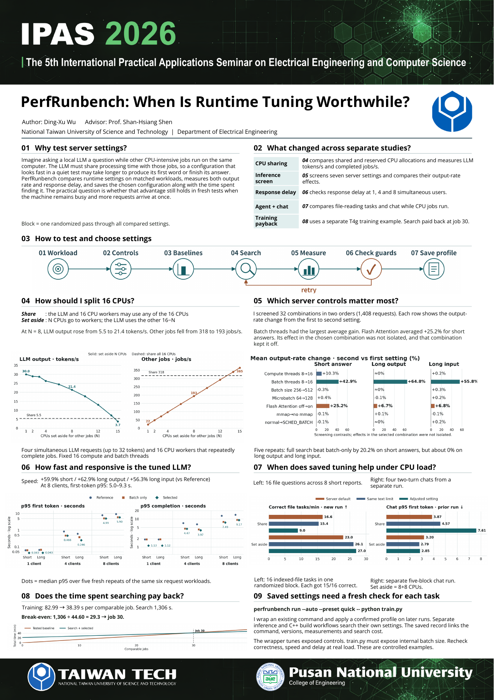

Research project研究專案20262026
PerfRunbenchPerfRunbench
Electrical Engineering · Taiwan Tech電機工程系 · 台科大
From the portfolio of Louis (DingXu) WuLouis 吳定栩的專案作品集
A cross-platform framework for running AI workloads under CPU, memory, and GPU limits; comparing reversible system and runtime settings; and producing traceable HTML/JSON reports.跨平台 AI benchmark 與調校框架，可在 CPU、記憶體與 GPU 限制下執行工作負載，比較可回復的系統與 runtime 設定，並輸出可追溯的 HTML/JSON 報告。
Highlights
- Runs training and inference workloads with resource guards through local, systemd, and Docker executors.
- Compares reversible runtime and host settings on matched workloads, recording output rate, response delay, and search cost.
- Supports Windows/WSL, Linux with NVIDIA GPUs, and Arm systems; ArmTune handles measured Arm inference tuning.
Project Links
Research poster研究海報
PDF